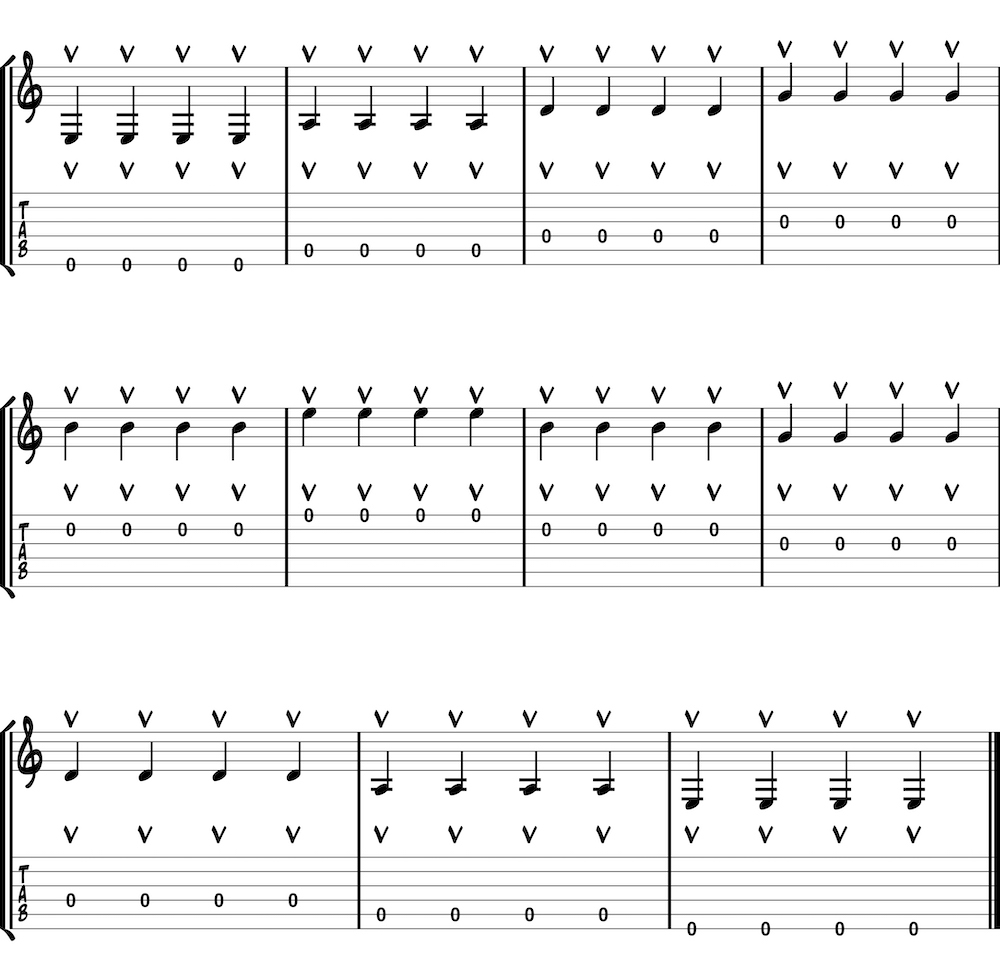

Upstrokes tend to be weaker than downstrokes for many players. Not only is the motion slightly awkward, but it requires a literal fight against gravity. Therefore, practicing with upstrokes only is a useful challenge. This example applies upstrokes to open strings in quarter notes, though the concept can (and should) be played in any rhythmic or melodic context.
